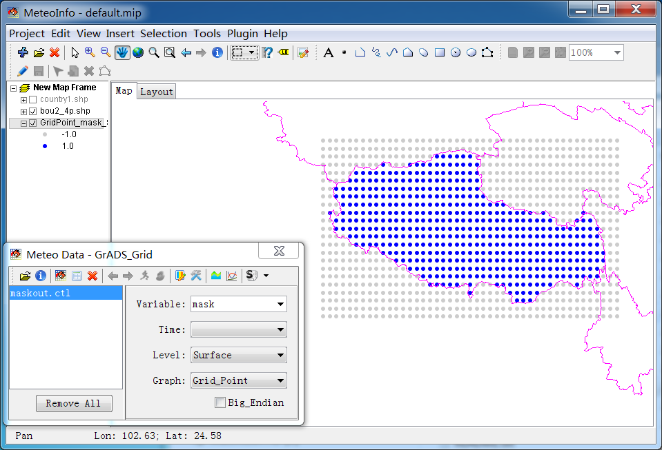

1. Load the polygon shape file as a layer in MeteoInfo and select one or more polygon shapes with maskout borders. All shapes of the layer will be used in following steps if no one shape is selected.

2. Click ‘Tools -> Output Map Data’ menu to open the below dialog. Select the above layer and set ‘Output Format’ as ‘GrADS Maskout File’.

3. Press ‘Output’ button from above dialog and give an output file name. Then set output grid parameters in below dialog and press ‘OK’ button to create the GrADS maskout data file.

The created GrADS maskout data file from above steps is opened and showed as grid points. The grid points inside the maskout border are set 1 as value, while the outside points value is -1.
